17.06.2024 - 05.07.2024
Oberstdorf - Flensburg - Westerland
Klicken, um Karte anzuzeigen oder zu verbergen.
Etappenübersicht
Tag 1
Kirchheim u. Teck nach Wendlingen Bahnhof
mit der Deutschen Bahn über Ulm nach Oberstdorf
mit dem Fahrrad zur Schanze Oberstdorf und dann bis nach Kempten
Tag 2
Kempten im Allgäu nach Neu-Ulm (Brickstone Hostel)
Tag 3
Neu-Ulm nach Crailsheim
Tag 4
Crailsheim nach Würzburg
Tag 5
Würzburg nach Gersfeld (Rhön)
Tag 6
Gersfeld (Rhön) über die Wasserkuppe nach Tann (Rhön)
Tag 7
Tann (Rhön) zur Villa Velo bei Eschwege in Hessen
Tag 8
Eschwege nach Bad Lauterberg im Harz
Tag 9
Bad Lauterberg bis Braunlage (aufgrund Probleme mit der Gangschaltung)
Tag 10
Braunlage über den Brocken bis zur Jugendherberge Braunschweig
Tag 11
Braunschweig nach Hitzacker (Elbe) zum Destinature Dorf
Tag 12
Hitzacker (Elbe) bis zum Wohnmobilstellplatz Trittau
Tag 13 & Tag 14
Trittau nach Kiel
Besuch der Kieler Woche und Besichtigung Gorch Fock
Tag 15
Besuch beim Fahrradhersteller myboo
Kiel nach Flensburg
Tag 16
Flensburg nach Østerby auf der Insel Rømø in Dänemark
Tag 17
Havneby (Fähranleger Syltfähre) nach List auf Sylt
List nach Westerland
Tag 18
Rückfahrt mit der Deutschen Bahn von Westerland über Hamburg (Altona) und Heidelberg nach Stuttgart Hbf
Tag 19
Ankunft in Stuttgart
Rückfahrt mit dem Fahrrad nach Kirchheim u. Teck
Reisebericht mit Bildern
Tag 1
Nach langer und ausführlicher Vorbereitung geht es endlich los. Zunächst fahre ich zum Bahnhof Wendlingen, um von dort um 10:20 Uhr mit dem Zug nach Ulm zu fahren. Anschließend geht es mit dem RE75 bis nach Oberstdorf. Dort angekommen, fahre ich mit dem Fahrrad bis zur Schanze und mache beim Schanzenwirt eine Mittagspause. Gut gestärkt geht es bis nach Kempten.
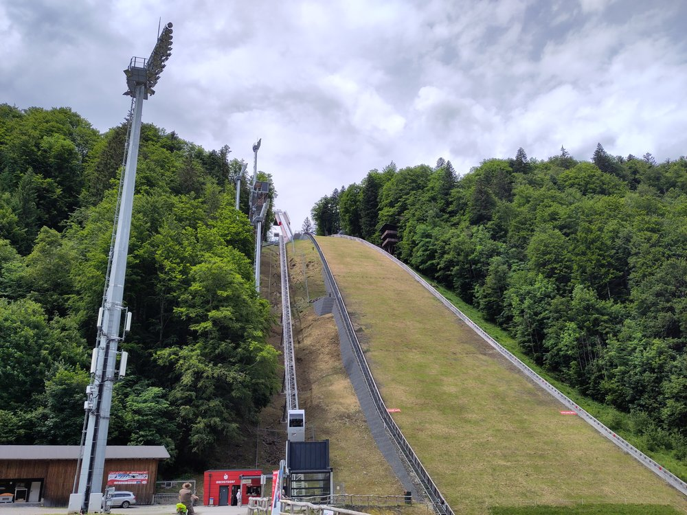
Tag 2
Nach einem kurzen Stopp bei einem Bäcker in Kempten geht es immer am Illertalradweg entlang Richtung Neu-Ulm. Leider muss ich aufgrund von Unwettern und Überschwemmungen in den Wochen zuvor ständig Umleitungen in Kauf nehmen, da an manchen Stellen der Radweg weggespült wurde.
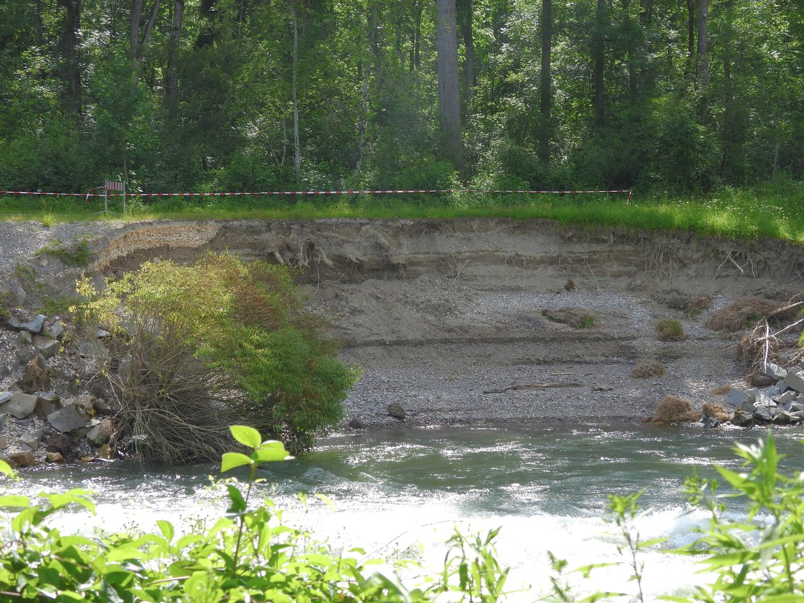
Tag 3
Auf dem Weg von Neu-Ulm nach Crailsheim fahre ich immer wieder an endlosen Mohnfeldern vorbei. So ein Anblick entschädigt für alle Anstrengungen.
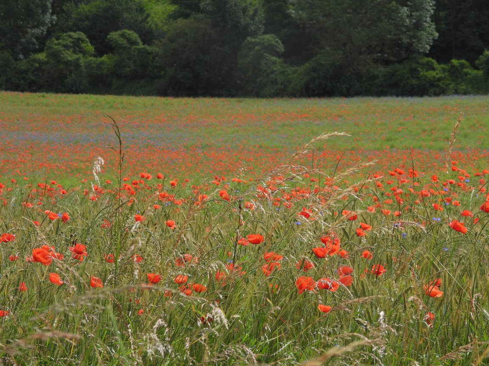
Tag 4
Auf dieser Etappe fahre ich an vielen abgemähten Wiesen vorbei, auf welchen teils ganze Gruppen von Störchen zu sehen sind. Endziel der Etappe ist Würzburg. Dort kann ich bei einem Bekannten übernachten.
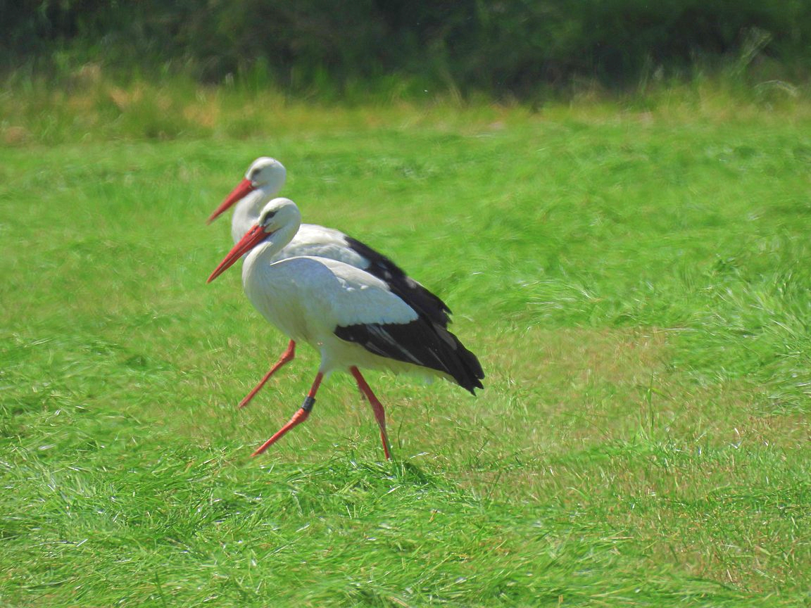
Tag 5
Kurz nach Würzburg zeigt mein Navi das erste Mal eine verbleibende Kilometerzahl von kleiner 999 km an. Die größtmögliche Zahl, die auf dem Gerät angezeigt werden kann, ist 999,99 km. Daher kann ich die ersten Tage der Tour nur über die Sigma Ride App nachschauen, wie weit es noch bis zum Endziel ist. Auf dem Weg nach Gersfeld sehe ich teils ungewohnte Warnschilder.
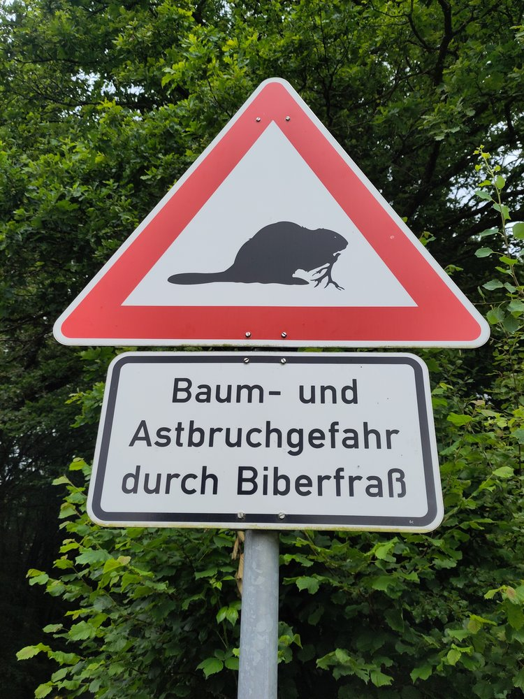
Tag 6
Heute steht die erste von zwei Bergetappen an. Ich fahre zum Flugplatz auf der Wasserkuppe. Sie ist nicht nur für Liebhaber von Segelflugzeugen ein beliebtes Ausflugsziel.
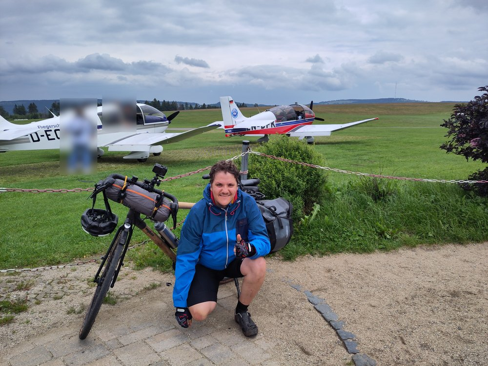
Leider habe ich heute Pech mit der Unterkunft. Eine Ersatzunterkunft in Tann (Rhön), die mir kurzfristig empfohlen wird, lehne ich ab. Im Internet ist die Übernachtung mit 55€ pro Nacht angegeben, als ich nachfrage, wird mir ein Preis von 76 € genannt, da noch 21 € für eine anschließende Zimmerreinigung verrechnet werden. Daher fahre ich kurzerhand auf einen nahe gelegenen Wohnmobilstellplatz und übernachte im Zelt.
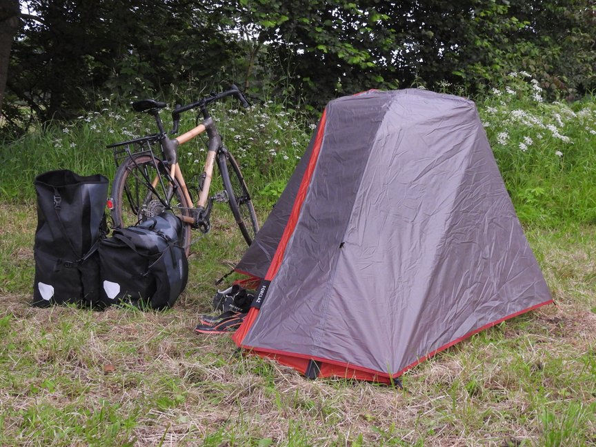
Tag 7
Diese Etappe führt mich durch wunderschöne, ruhige Täler bis nach Jestädt in der Nähe von Eschwege in Hessen. Hier buche ich mir auf dem Weg eine Bett + Bike Unterkunft. Um kurz vor 19 Uhr erreiche ich die Villa Velo. Ich kann diese Unterkunft jedem weiterempfehlen!
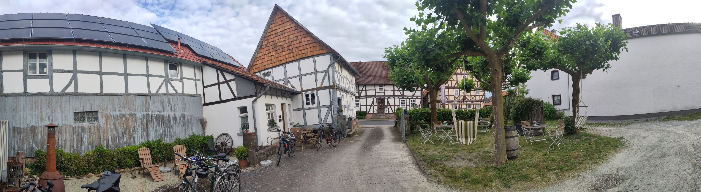
Tag 8
Weiter geht es auf diversen Schotterwegen in Richtung Harz. Ich fahre bis nach Bad Lauterberg und will am darauffolgenden Tag die Brockenetappe fahren.
Tag 9
Nachdem ich morgens feststelle, dass meine Gangschaltung Probleme macht und mir zudem durch die Vibrationen vom Vortag ein Flaschenhalter gebrochen ist (vermutlich ausgelöst durch einen Materialfehler), beschließe ich, die Bergetappe um einen Tag zu verschieben und stattdessen eine Werkstatt aufzusuchen. Da die Reparatur mehr Zeit in Anspruch nimmt, als geplant, beschließe ich heute nur bis Braunlage zu fahren. Zum Abschluss des Tages habe ich dennoch ein schönes Erlebnis, da ich kurz vor Braunlage einen wildlebenden Luchs in ca. 50 Metern Entfernung sehe. Dieses Mal übernachte ich in einem Hostel. Beim Check-In wird mir gesagt, dass gerade eine große Schülergruppe in dem Hostel übernachtet und es entsprechend ziemlich laut werden kann. Daher bekomme ich ein kostenloses Upgrade und darf im Hotel ein Stück weiter die Straße runter übernachten.
Tag 10
Heute kann ich die Brockenetappe wie geplant fahren. Um kurz nach 10 Uhr starte ich in Braunlage und erklimme gut erhohlt und in gemütlichem Tempo den Brocken. Erfreulicherweise ist das Wetter perfekt. Blauer Himmel, die Sonne scheint und es ist nicht zu warm. Die Aussicht ist atemberaubend.
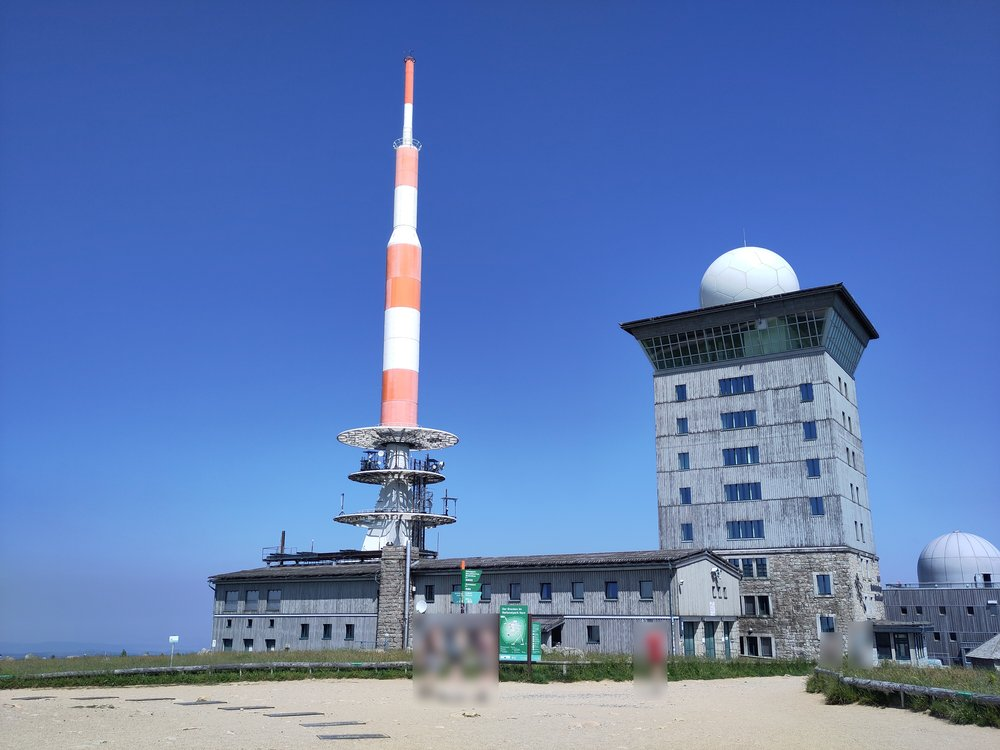
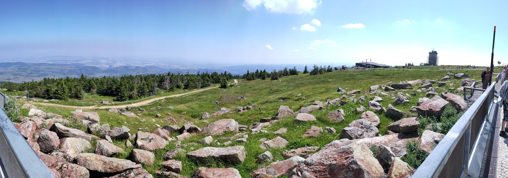
Anschließend geht es fast 800 Höhenmeter bergab und dann bis in die Jugendherberge in Braunschweig. Auch diese Unterkunft buche ich spontan.
Tag 11
Bereits kurz nach Braunschweig fahre ich dem Elbe Seitenkanal entlang. Diesem folge ich für gut 30 km, bevor ich aufgrund eines aufziehenden Gewitters die Tour kurzfristig umplanen muss. Ich nutze die Gelegenheit für eine kurze Mittagspause, anschließend fahre ich bis nach Hitzacker (Elbe). Um 20 Uhr komme ich schließlich nach 140 km im Destinature Dorf Hitzacker an.
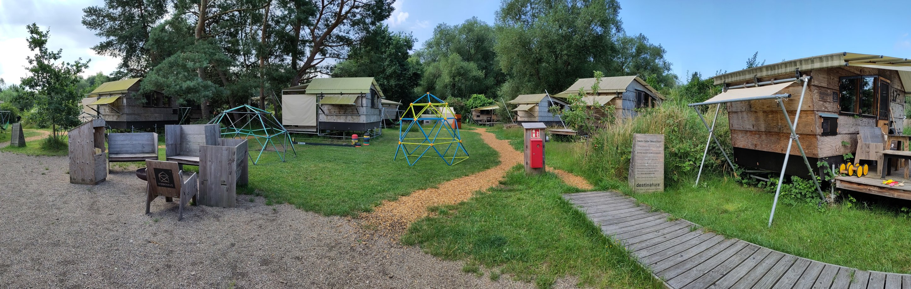
Tag 12
Da ich bereits morgen in Kiel ankommen will, fahre ich bis nach Trittau. Trotzdem sind es am nächsten Tag noch mehr als 110 km, bis ich dort ankomme. Aufgrund der Kieler Woche sind die Hotels fast alle ausgebucht und extrem teuer. Leider war ich mir im Voraus nicht bewusst, dass die Kieler Woche ausgerechnet in diesem Zeitraum stattfindet.
Tag 13
Ohne am Vortag noch eine Unterkunft gefunden zu haben, fahre ich die ersten 60 km in Richtung Kiel. Erst von Bad Segeberg aus erreiche ich ein Hotel, das mich am Abend für zwei Nächte aufnehmen kann.
Tag 14
Dank der Kieler Woche habe ich die Möglichkeit, das Segelschulschiff der Deutschen Bundeswehr Gorch Fock in ihrem Heimathafen zu sehen. Obwohl es regnet entscheide ich mich gegen eine Busfahrt und laufe ungefähr 45 Minuten bis in die Stadt. Kurz vor dem Ziel leihe ich mir einen E-Roller und fahre den Rest der Strecke.
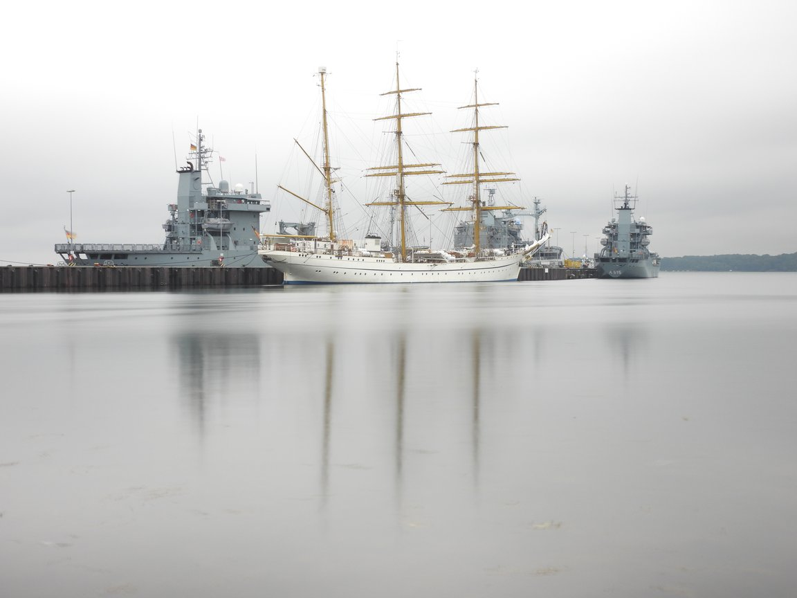
Tag 15
Nach einer weiteren Nacht in dem Hotel in Kiel fahre ich nach dem Auschecken um 11 Uhr zum Showroom von myboo, dem Fahrradhersteller, um die Leute, die mich während der Fertigstellung meines Traumrades begleitet und mir jeden Wunsch erfüllt haben, persönlich kennenzulernen. Anschließend geht es weiter in Richtung Flensburg. Rund 30 km vor Flensburg habe ich einen Fahrradunfall, bei dem der Lenker in Mitleidenschaft gezogen wird. Nach halbstündiger Pause und dem Ausrichten des Lenkers kann es aber weitergehen.
Tag 16
An diesem Tag geht es über die deutsch-dänische Grenze, da ich Sylt mittels Fähre von der Insel Rømø aus erreichen möchte. Rømø ist über ein Damm, der auch mit dem Fahrrad befahren werden darf, vom dänischen Festland aus erreichbar. Leider habe ich nicht mit so viel Gegenwind gerechnet. Nach mehr als fünf Stunden in vollem Gegenwind und mehreren Regenschauern bei Temperaturen von maximal 12°C verpasse ich wegen einer halben Stunde die letzte Syltfähre. Daher muss ich kurzfristig eine neue Unterkunft buchen. Die Unterkunft in Westerland muss ich dennoch voll bezahlen, da eine Stornierung nicht mehr kostenfrei möglich ist.
Tag 17
Um eine Situation wie am Vortag zu vermeiden, fahre ich gleich morgens an den Hafen, kaufe mir ein Einzelticket und verlasse Rømø mit der zweiten Fähre. Auf Sylt angekommen, gibt es erstmal ein Bier und was zu Essen (stilecht im Strandkorb). Anschließend sind es nur noch knapp 18 km bis zur letzten Unterkunft.
Tag 18
Heute ist auch schon der letzte Tag der Tour. Am Abend geht es mit der Deutschen Bahn über Nacht zurück nach Stuttgart. Eigentlich will ich heute noch ins Meer und Schwimmen gehen, aufgrund der Wetterlage mit Sturm und bis zu zweieinhalb Meter hohen Wellen ist das aber leider nicht möglich.
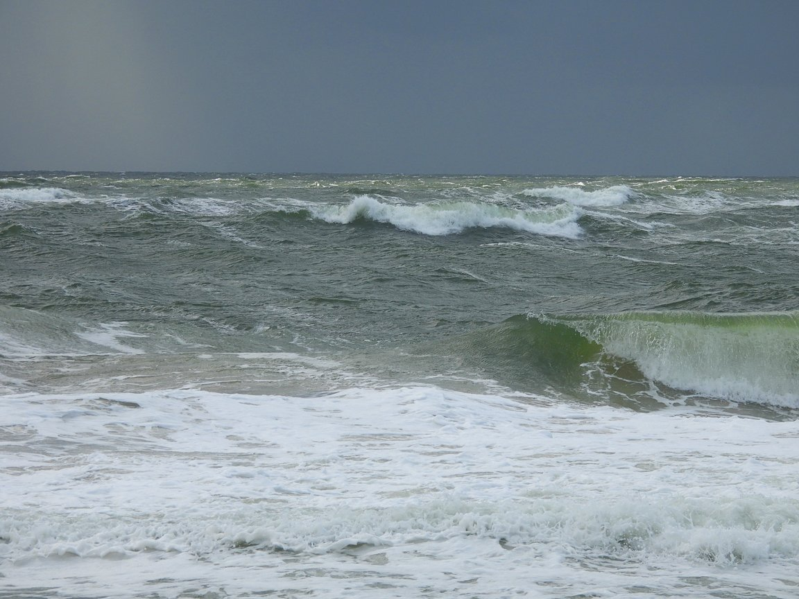
Nachdem ich morgens kurzfristig online die Fahrkarte gekauft habe, stelle ich fest, dass ich eine Fahrradmitnahme nicht über die DB App buchen kann. Zum Glück ist aber noch genug Zeit, um das am Schalter nachzuholen. Abschließend noch ein Bild vom Fahrradtransport mit der Deutschen Bahn.
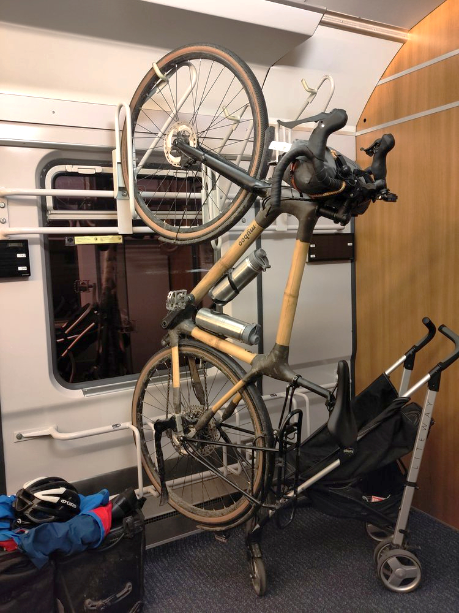
Tag 19
Planmäßig komme ich nach 12 Stunden Zugfahrt endlich in Stuttgart am Bahnhof an. Ich habe keine Lust, noch länger in der Bahn zu sitzen und will mich stattdessen lieber bewegen. Daher fahre ich statt mit der S-Bahn die letzten 32 km mit dem Fahrrad nach Hause. In Anbetracht der Tageskilometer, die ich auf dieser Tour im Durchschnitt gefahren bin, wirkt diese Strecke geradezu wie ein Einfahren.